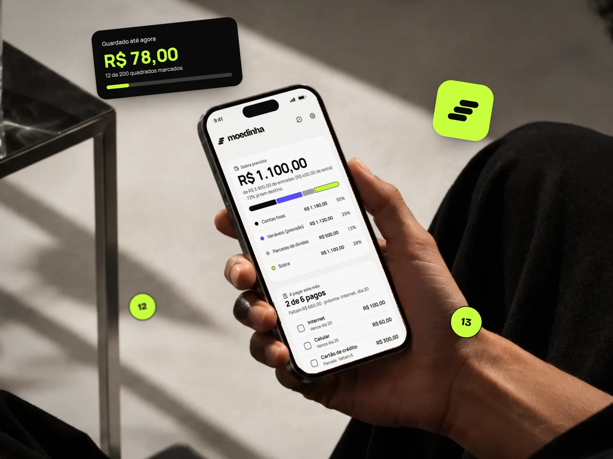

Creator Banking
Experiência financeira para criadoras de conteúdo, do primeiro acesso ao uso diário.
Produto autoral · PWA · 2026
Um app para quem está começando a cuidar do próprio dinheiro: saber quanto sobra, lembrar o que falta pagar e guardar aos poucos, sem planilha e sem cadastro.

01O problema
A ideia nasceu de uma situação concreta: uma jovem conciliando faculdade, primeiro emprego e, pela primeira vez, as próprias contas. O dinheiro entra, o aluguel sai, o cartão vira parcela, e no fim do mês fica a sensação de não saber para onde foi.
As saídas disponíveis não encaixavam. A planilha dá trabalho para manter. O app do banco mostra o que já aconteceu, não o que vai acontecer. E os apps de finanças pedem conta, conexão com o banco e um mar de gráficos antes de ajudar em qualquer coisa.
Organizei o que apareceu nas conversas em três perguntas. O Moedinha existe para responder a elas.
Quanto sobra este mês?
Depois das contas, das parcelas e do que costuma variar, quanto do salário ainda está livre.
O que ainda falta pagar?
Quais contas já foram e quais vencem nos próximos dias, sem precisar lembrar de cabeça.
Quanto já guardei?
Um objetivo que dá para ver crescendo, mesmo quando o valor guardado é pequeno.
02A ideia
Em vez de um app de finanças completo, cinco ferramentas pequenas, cada uma ligada a uma tarefa real do mês. A navegação mantém todas a um toque de distância, sem transformar a rotina num sistema de planilhas.
Quanto sobra do salário depois das contas, e o que vence a seguir.
→ Quanto sobra?
Entradas, contas fixas e a previsão do que varia, como mercado e transporte.
→ O que falta pagar?
Quanto ainda deve, quanto paga por mês e quando termina.
→ O que falta pagar?
O desafio dos quadrados: uma meta grande em vários passos pequenos.
→ Quanto já guardei?
A lista do mercado, marcando o que já foi para o carrinho.
→ O dia a dia
03Primeiro contato
Três telas apresentam o que o app faz e como ele trata os dados: sem conta, sem cadastro, tudo no celular e funcionando sem internet. Em seguida, a pessoa cria um PIN de 4 números.
Apresentação, criação do PIN e a tela de entrada das próximas vezes.
04Montagem guiada
Um app de finanças vazio pede esforço justo quando a pessoa ainda não sabe se vale a pena. Por isso a entrada é uma conversa em quatro perguntas, na língua do dia a dia: quanto entra, quando cai, quais contas se repetem e se há parcelas.
No fim, ela já vê a primeira previsão do mês e pode seguir um tour rápido que mostra onde fica cada coisa. Quem prefere explorar antes pode começar com valores de exemplo e trocar pelos seus depois.
Quatro passos de montagem e, em seguida, um tour curto pelas abas.
05O produto
O Resumo abre com a resposta mais importante, a sobra prevista, e mostra para onde vai cada parte do salário numa barra só. Abaixo, o que vence a seguir, as dívidas e o quanto já foi guardado, cada um levando para a sua aba.
Em Guardar, o desafio dos quadrados divide uma meta grande em duzentos passos pequenos: a cada valor guardado, a pessoa marca um quadrado.
Telas longas rolam sozinhas. Toque em qualquer uma para ver de perto.
Experimente
Esta demonstração tem as mesmas telas e interações do Moedinha, já preenchida com valores de exemplo. Algumas coisas para tentar:
Na demonstração não há PIN e nada fica salvo: ao recarregar a página, tudo volta ao início.
07Detalhes
O lembrete do salário entende como o salário cai no Brasil: 5º dia útil da CLT, sábado contando ou não, feriados nacionais, adiantamento no meio do mês e dia fixo que cai no fim de semana. No dia, o app lembra de guardar uma parte antes de começar a gastar.
Como os dados ficam só no aparelho, o app também lembra de fazer backup a cada duas semanas.
As regras de pagamento do salário e, nos ajustes, backup, segurança e lembretes.
08Claro e escuro
O tema segue o do celular e também pode ser escolhido nos ajustes.
09Marca e design system
O Moedinha não começou do zero visualmente. Ele parte de um design system anterior, o ZEOM, com estrutura Material 3, e o leva para uma versão 2.1: a marca e a paleta do produto entram como valores dos tokens, e tudo o que o app precisou e o sistema ainda não tinha virou componente documentado.
O guia ainda carrega o nome de trabalho do projeto, Cofrinho. Como no sistema original, nenhum componente usa uma cor direto, só tokens, e os dois temas saem dos mesmos componentes.
--hero-bg / --hero-fgCard de destaque carvão com valor em lima, na aba Guardar.--cat-fixed … --cat-leftAs quatro categorias do gráfico do Resumo.--snack-bg / --snack-actionSnackbar carvão com ação lima no claro; invertido no escuro.O sistema não só ganhou peças: as que já existiam foram medidas de novo no celular, e cada mudança ficou registrada com o motivo.
| Componente | v2 | v2.1 | Por quê |
|---|---|---|---|
| Button | 44 px | 48 px · 52 no rodapé | Alvo de toque mínimo de 48 px das fundações. |
| Switch | 48 × 28 | 52 × 32 | Proporção mais fácil de acertar no celular. |
| Checkbox e radio | só o controle | linha inteira · 56 px | Opções longas, com descrição. |
| Card | 16 ou 24 | 24 seção · 16 item | Hierarquia entre a seção e o item dentro dela. |
| Snackbar | canto esquerdo | centro, acima da navegação | Alcance do polegar e convivência com a barra de abas. |
| Navigation bar | rótulo 11 px | 12 px · 700 na ativa | Legibilidade. |
| Tooltip | 328 px | até 340 · contagem e 2 ações | Uso no tour guiado. |
Fundações, mudanças da v2.1, componentes e telas de exemplo, cada página com estados, anatomia, uso e código.
10Decisões de produto
Começar leva segundos e nenhuma informação sai do celular. O preço é o backup ser responsabilidade da pessoa, então o app lembra dele.
Instala na tela inicial, abre offline e se comporta como app. O desktop funciona, mas o desenho é para o celular.
"Bora", "Fechou", "Dá para mudar depois". Nada de termos financeiros nem promessa de enriquecer: é para organizar, não para investir.
11Processo
Desenhei a experiência, a marca e o sistema, e usei IA (Claude Code e Codex) para acelerar a construção da PWA. A direção, os critérios de experiência e o refinamento de cada tela ficaram comigo.
A lista de funcionalidades desejadas virou três perguntas e cinco ferramentas.
Tokens, componentes novos e regras de comportamento de app documentados antes de escalar as telas.
Implementação acelerada por IA, com cada tela revisada contra o sistema e testada no celular.
12Estado atual
O Moedinha ainda não foi lançado; hoje é usado por uma pessoa. Não há resultado de adoção ou impacto para mostrar, e este case não finge que há. O que vem a seguir:
Observar outras pessoas montando o mês pela primeira vez e onde a montagem guiada trava.
Validar se a "sobra prevista" é entendida do jeito que foi pensada.
Entender se o desafio dos quadrados mantém a pessoa voltando depois do primeiro mês.
Testar se "dados só no celular" tranquiliza ou preocupa, e como fica o backup na prática.
Para quem está começando, organizar dinheiro não pode parecer mais uma obrigação. O trabalho de design aqui foi tirar peso: menos perguntas, menos telas vazias, menos jargão, e um jeito de ver progresso mesmo quando o valor é pequeno.
Experiência financeira para criadoras de conteúdo, do primeiro acesso ao uso diário.

Sistema autoral com 34 componentes em três temas, construído sobre o manual de marca com Material 3 como referência.

Navegação por categorias do app reestruturada a partir de avaliação heurística e benchmarking com 5 players.